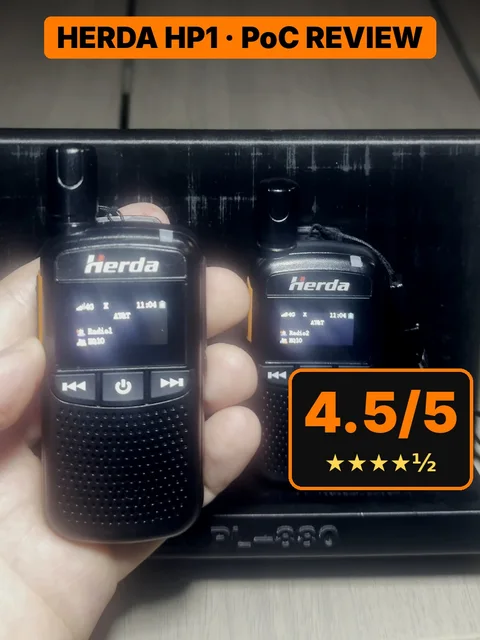
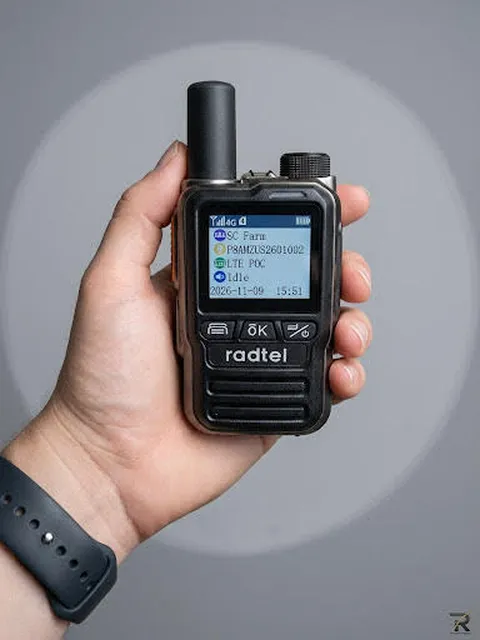
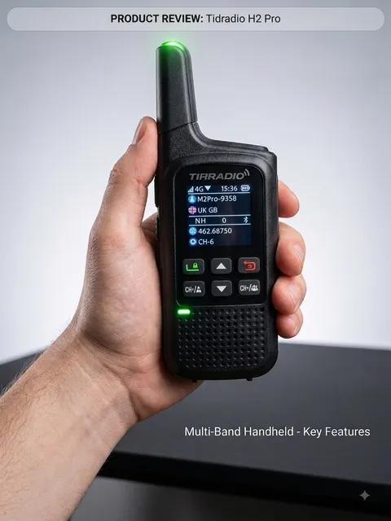
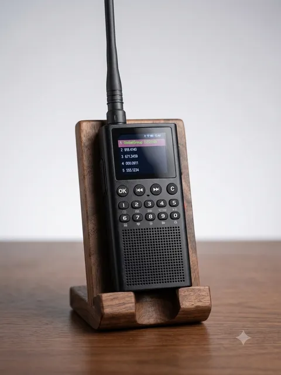
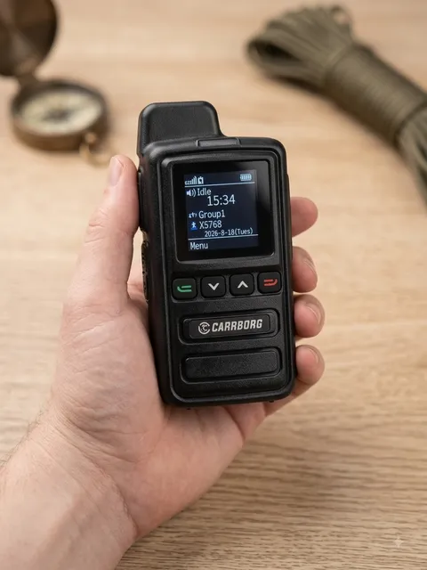
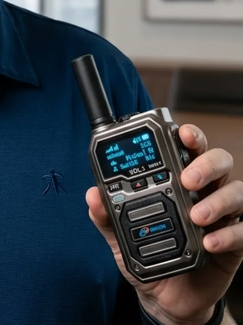

Updated November 2026 · Every pick tested by hand
These aren't toy walkie talkies with a two-mile range. They're PoC radios: push the button and you're talking over the cell network, across town or across the country, with no license and no smartphone. I've used every radio below myself. Here's who each one is right for, and the one catch to know before you wrap it. Looking for prices? See today's PoC radio deals.

At 63 grams with a neck strap, the HP1 is small enough that a kid or a grandparent will keep it on them, and its 2W speaker is loud enough to hear across a room. One button to talk, nothing to learn, no apps or browser. The SIM and year one of service come in the box.
The catchAbout $130 for a 2-pack direct from Herda (not on Amazon), and renewal is $25 per radio per year after year one. Closed groups only, which for family use is a plus.

The clearest, loudest audio we've tested, which is exactly what you want over road noise on a two-car road trip. It comes as a 2-pack with SIMs for the first year and a solid zinc-alloy body that survives a glovebox. Renewal is about $10 per SIM per year.
The catchA 1 to 2 second pause after you press the button, and no signal means no talk.

Two talk buttons: one goes nationwide over the cell network, the other switches to license-free FRS radio-to-radio with no network at all. That makes it the pick for campgrounds, trailheads and anywhere the bars disappear. And it renews for a published $9.99 a year.
The catchThe Odmaster app is buggy; set up the group for them before you wrap it.

PoC talk, a 2W analog UHF walkie-talkie, a TEF6686 shortwave/AM/FM receiver and internet radio, all in one. For the person who already owns a scanner and a shortwave radio, this is the one they don't have yet. AM reception impressed me, and FM was flawless.
The catchUse 2.4 GHz WiFi for PoC (not 5 GHz), and it's compact for big hands.

A bright, easy-to-read screen, clear audio, and lifetime free data from the seller, so there's no yearly renewal to remember. A practical gift for someone running a crew who wants radios that just keep working.
The catchA bit more delay than faster radios, and it's a big handheld.

An aluminum alloy body, a dust-proof speaker with great sound and an easy-to-read screen. It's the radio I'd hand someone who's hard on their gear, as long as they're working where there's cell coverage.
The catchHeavy at about 300 g, and OMIZN doesn't publish its renewal price.
Yes. Nationwide walkie talkies are PoC (push-to-talk over cellular) radios: they send your voice over the 4G LTE network, so both radios need cell signal. Most include a SIM for the first year, then renew for about $10 to $25 per radio per year.
It can be: a kid can reach a parent with one button, with no apps, browser or social media. It only works where there is cell signal and only talks to radios in its own group. Buy at least two, and keep one for the parent.
Early. Some brands ship from China; Radtel lists 8 to 15 days to the US, or 3 to 7 days from a local warehouse. Ordering by early December leaves room for setup before the holidays.
Some links are affiliate links; we may earn a commission at no extra cost to you. Disclosure.